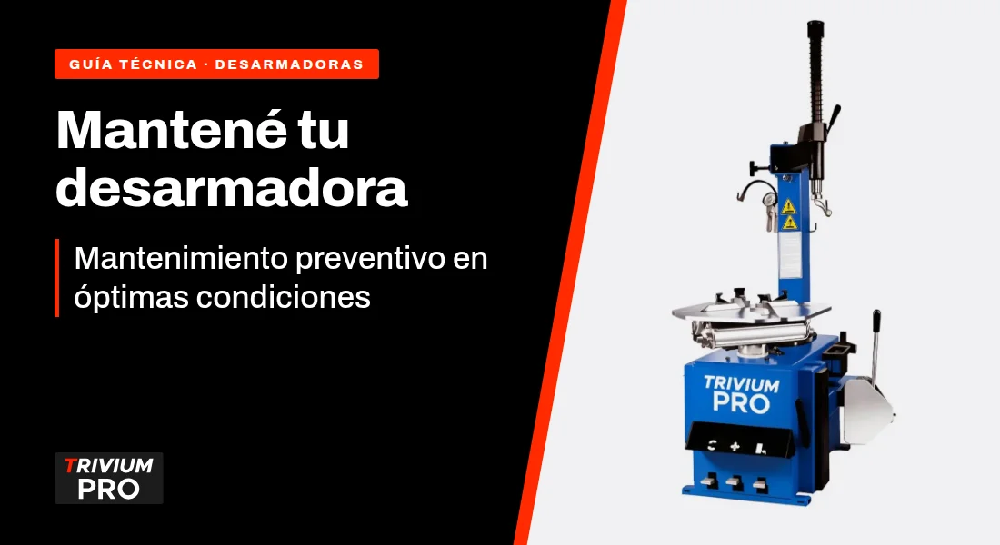

1. Limpieza Diaria
La acumulación de polvo, residuos de neumáticos y lubricantes puede afectar el funcionamiento de la desarmadora. Realiza una limpieza diaria de las siguientes áreas:
- Plataforma y brazos: Limpia la plataforma donde se montan las llantas y los brazos de sujeción.
- Punto de montaje y desmontaje: Asegúrate de eliminar cualquier residuo en el cabezal de montaje y en la cuchilla para evitar daños en los neumáticos.
2. Lubricación de Componentes
La lubricación es fundamental para reducir la fricción y el desgaste en las piezas móviles:
- Componentes móviles: Aplica lubricante en los puntos de pivote de los brazos y las guías del cabezal de montaje.
- Sistema de sujeción: Lubrica las partes móviles del sistema de sujeción para asegurar un agarre seguro y prolongar su vida útil.
3. Verificación de los Niveles de Presión
Una presión insuficiente puede afectar el rendimiento de la desarmadora y causar daños:
- Sistema neumático: Revisa regularmente que el sistema de aire comprimido esté en el nivel adecuado, ya que es esencial para el funcionamiento de los componentes hidráulicos.
- Filtro y regulador de aire: Inspecciona el filtro de aire y el regulador para asegurarte de que estén en buen estado y ajustados correctamente.
4. Inspección de Cables y Conexiones
Mantén el sistema eléctrico seguro y funcional:
- Cables de alimentación y conexiones: Revisa que no haya cables expuestos o desgastados. Reemplázalos inmediatamente si encuentras signos de desgaste para evitar problemas eléctricos.
- Conexiones de aire: Asegúrate de que todas las conexiones de aire estén firmes y libres de fugas.
5. Revisión de Componentes Específicos
Cada cierto tiempo, realiza una revisión más profunda de los componentes principales:
- Pedales de control: Inspecciona los pedales de control para asegurarte de que respondan correctamente y no estén desgastados.
- Manómetro de presión: Verifica la precisión del manómetro de presión y ajústalo si es necesario.
- Cuchilla para talón: Mantén afilada la cuchilla para evitar daños en las llantas y mejorar la eficiencia.
6. Programación de Mantenimiento Preventivo
Además de las tareas diarias, programa revisiones periódicas con un técnico especializado:
- Inspecciones trimestrales o semestrales: Es recomendable hacer una revisión completa de la máquina cada tres a seis meses.
- Reemplazo de piezas: Sustituye piezas que presenten signos de desgaste para evitar problemas futuros.
Conclusión
Con estos pasos de mantenimiento, tu desarmadora Trivium Center se mantendrá en perfectas condiciones, garantizando un rendimiento óptimo y una larga vida útil. Recuerda que un mantenimiento adecuado no solo mejora el desempeño de la máquina, sino que también reduce el riesgo de accidentes y garantiza la seguridad de tus empleados y clientes.